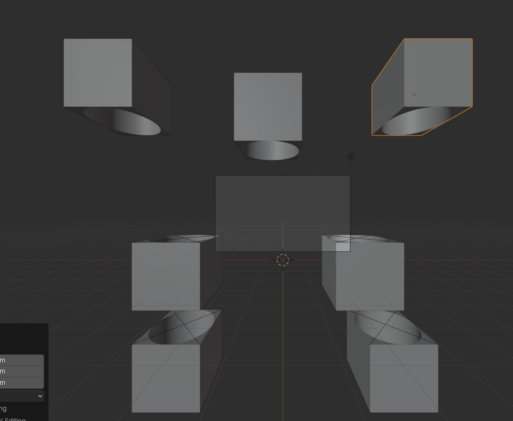
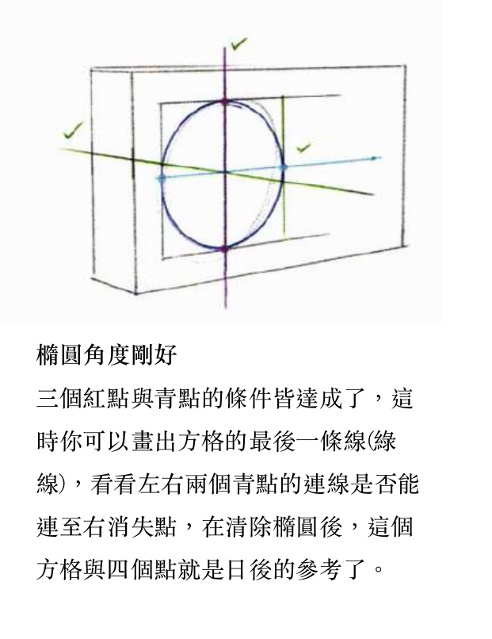
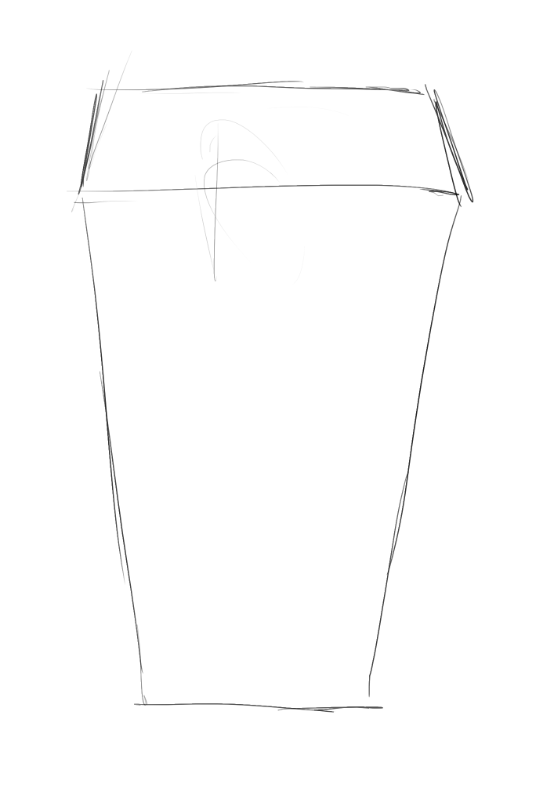
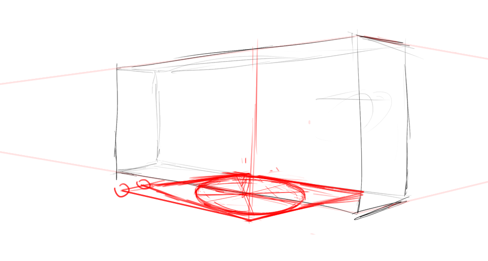
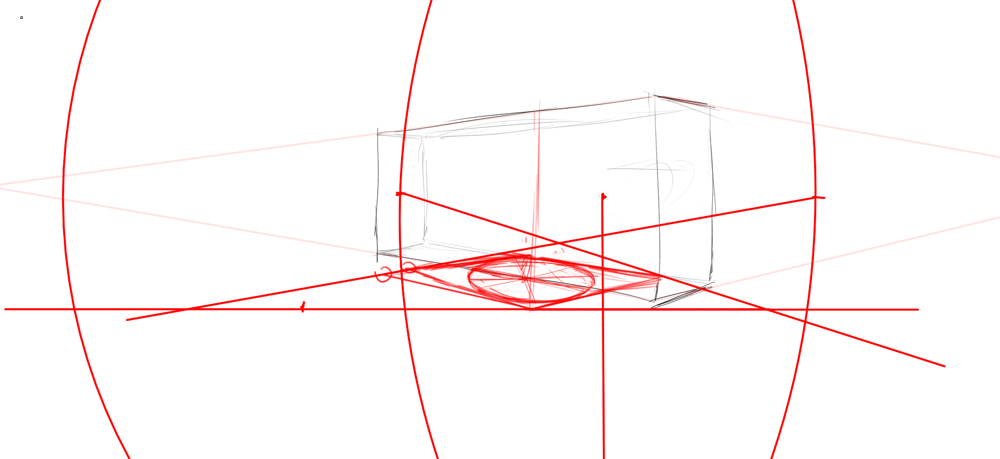

《How To Draw》椭圆部分的学习
主要看第五章。可能前面椭圆的绘制，透视网格也值得一看。这本书值得仔细研究，但当前我先放放。
第五章 椭圆与旋转
页码采用我手里的这个版本 PDF 的页码，这玩意儿没有目录，页面上没有页码，就非常奇怪。
对第五章，我专注关心作者给出的究竟是永远成立的理论，还是实践规律（作者在文字中没有分开强调它们）。
短轴，对角线，法线

这一页提出，短轴必过对角线交点，短轴必为法线，这两个均是实践规律（但这也是好消息，证明我在实际画画时可以无脑用，大部分时候）。

既然连这本书都不提这里的理论规律究竟怎样，那我也不研究了。
但对比这个视频，短轴过对角线交点还有更多可以说道的内容……但出发点不一样——它是先方后圆，我是先圆后方。 这里作者指出来了具体的名字——方变圆是内切法，直接画圆是对齐法（短轴对齐）。
这两种方法，内切法是数学上精确的，3D软件看到的都是它，而对齐法是适用于绘画的，粗略但观感好的。何时使用内切法何时使用对齐法？按照我目前的总结，强透视用内切法，弱透视用对齐法，起整个画面的空间用内切法，起局部物体用对齐法。实际上使用对齐法时也可以考虑到内切法，即凭感觉地主动调整长轴方向，但仅仅是考虑而已。
这再次证明透视学理论和其在绘画中的实践的差异。
车轮检查法
关于已经有一个立方体，要给一个面加上车轮，这里已经确定了法线方向，因此短轴方向可以确定（至少在弱透视下），但胖瘦？迷之那啥老师说可以直接凭直觉去画，但检验方式还是想要一个。
而实际的检查方法很简单——按椭圆边缘做四条切线分别平行于椭圆所在平面的两条边，检查对应切点连线是否大致和这两条边平行。

这个方法允许我在任意地方画出正方形，但必须向自己强调，这个方法一定依赖了一些我尚且不知道的前提（毕竟它能在缺乏必要信息（如心点）的时候画出正方形出来）。这里进行一些实验。
正方体画法
好玩儿的要来了——已经定出来消失点，使用上面的车轮法绘制正方体。这是容易理解的：

但是！我如果以圆柱大法为底层逻辑，是不会出现这种先定出消失点连线再定正方体的作画顺序的，除非我是画两点透视。相应方法仍旧能启发我，只是要换换思路。大致过程：
- 用椭圆定出顶面正方形，根据短轴定出三个点向Z轴的方向（这个……当前只能说凭感觉定了，我不知道有何简单的方法去把它定出来，或许是根据椭圆对应的角度，猜测顶部平面的灭线和Z轴灭点的距离关系？）
- 取任意一个侧面，使用车轮法绘制它（注意它们共享一条边作为切线且切点是中点）
- ……
一些研究
考虑一个经典但让我拿不准的问题——正面俯视大透视人体（一个总是有去画的想法的镜头），我画了一个表示它的长方体，我想知道我画的长方体的宽高比：

但我发现，哦！我有一个更先的问题——这两个面，水平方向的线条和我将画的椭圆是垂直的，我不能直接检查我画的椭圆是否正确。这是车轮法的一个缺憾。
我用一个侧边去做车轮法，找到一个正方形（我注意到我这个正方形画的有点太歪了所以用直线工具处理了一下，留下了我徒手和直线工具留下的点，观察一下这两个点本身对测量有何误差（以看一下徒手的影响），然后用测点法去检查这个正方形，观察我车轮法做出来的误差。使用测点法时，我尝试两个心点——头左右的位置和脚左右的位置，检查差异。
（顺便，这里使用这个正方形，再利用鲁米斯法检查了比例，整个的比例为1：5，而问题就在于这个正方形是否标准了）

头部的心点，比例为2：3，这个偏差已经大到无法容忍了。

脚的心点，比例为7：8左右，这个可以接受。
这证明，心点的选取对这里是至关重要的（会对一个矩形是否是正方形有显著影响）……我在想，这里预设的心点恐怕得按视觉中心去算，比如这里是人体，读者肯定会聚焦在头上。这就是构成课了，这里不表。

OK……我恐怕得在这里对自己明确一下——像这种极端透视，看起来合理即可，而仅通过这样一个没有任何额外信息的长方体，是给不了你什么合理性的，你要做的，应当是把它进行切削（当然，要利用辅助线），去画出一个方块人，再看是否合理，然后根据感觉去调整。
或许可以对自己说——即使是画面的整个的透视空间，也是需要迭代的，我定一个空间，往里头放东西看是否合理，如果不合理再修改或重定。当然，改透视空间等于是把整个画面都推倒重做了。所以在这里积累经验，避免大动干戈是重要的。（再说，对于这种人眼毫无经验的极端透视，确实需要通过研究、尝试去积累经验）
本博客所有文章除特别声明外，均采用 CC BY-NC-SA 4.0 协议 ，转载请注明出处！